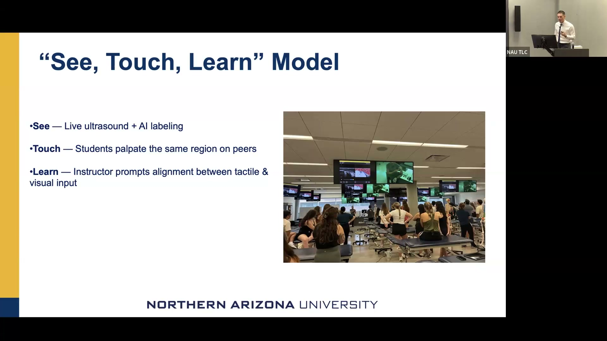

See Touch Learn: AI-Enhanced Ultrasound in Doctor of Physical Therapy Education
Integrating AI-powered ultrasound imaging into DPT anatomy training to lower cognitive load and build palpation confidence.
Presented by Michael Morgan, Assistant Clinical Professor, Doctor of Physical Therapy Program, NAU Phoenix Biomedical Campus
About This Project
Palpation — the tactile examination skill at the core of physical therapy practice — is among the hardest clinical competencies to teach. Students must develop a mental model of living anatomy beneath the skin, but conventional instruction offers only cadaver dissection and static diagrams. Ultrasound imaging shows real-time, dynamic anatomy, but traditional grayscale sonograms require substantial training to interpret, making them inaccessible as a first-semester learning aid. This project integrated an AI-enhanced ultrasound device (the Clarius L15 handheld unit with AI texture-mode overlay) into a first-semester DPT anatomy and palpation course serving 62 students at NAU's Phoenix Biomedical Campus.
The "See, Touch, Learn" instructional model paired live ultrasound imaging (with color-coded AI anatomical overlays that make tissue boundaries readable without prior sonography training) with simultaneous peer palpation and instructor-guided reflection connecting the two. Weekly sessions integrated ultrasound into the existing anatomy lab schedule rather than replacing it. Pre- and post-assessments measured anatomical understanding, palpation self-efficacy, and perceived relevance to future clinical practice. Preliminary findings showed significant gains in palpation confidence (paired t-test p < 0.001), and students consistently reported that the color overlays reduced the intimidation of interpreting sonographic images, enabling earlier engagement with spatial anatomy than traditional methods alone.
Project Highlights

